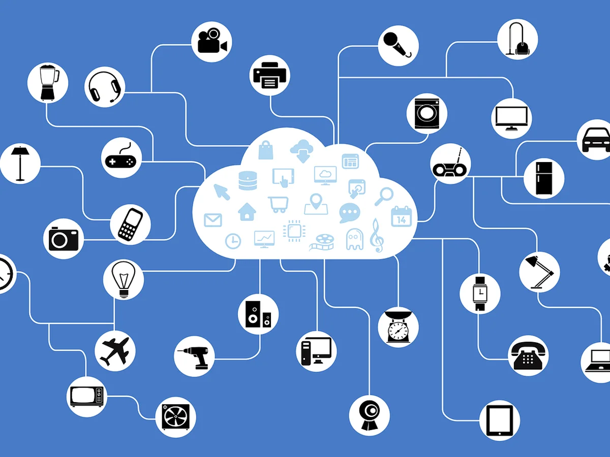
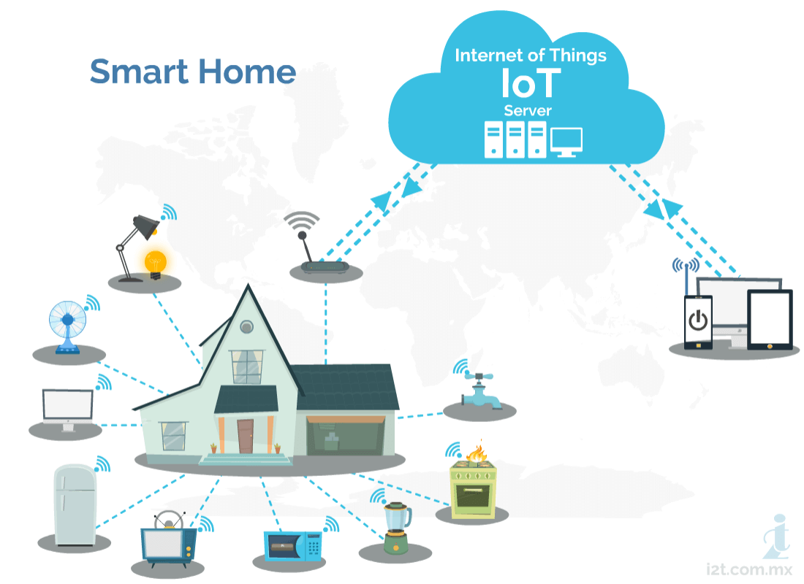

<main>
  <div class="row mx-auto reduce-60">
      <div class="col-lg-12 mb-3">
        <a href="#" class="back-arrow-a float-end">
            
            Regresar
        </a>
      </div>
    <div class="row mx-auto">
      <div class="col-lg-6">
          <h3>1.1 Que es Iot?</h3>
          <p>
              En pocas palabras, el internet de las cosas (IOT) está compuesto por cualquier cosa u objeto que tenga
              la capacidad de conectarse a internet, sea por vía inalámbrica (WI-FI) o alámbrica (ETHERNET) para
              recibir o enviar datos relevantes, desde vehículos automatizados o sensores de temperatura, hasta
              equipos de cómputo completo o Smartphones. Pero hoy, más específicamente IoT agrupa objetos equipados
              con sensores, software y otras tecnologías que les permiten transmitir y recibir datos. Otros tipos de
              plataformas de red son cada vez más capaces de manejar grandes datasets con velocidad y confiabilidad.
          </p>
      </div>
      <div class="col-lg-6">
          <p class="mt-5">
              Por supuesto, todo esto es con el propósito de recopilar datos para no es solo tenerlos, sino usarlos
              para la toma de decisiones automatizadas, o hacer ciertas predicciones más eficientes. Una vez que los
              dispositivos de IoT recopilan y transmiten los datos, el último paso es analizarlos y crear una acción o
              tomar una decisión fundamentada en dichos datos recopilados. Aquí es donde entran en juego las
              tecnologías de Inteligencia Artificial (IA): que usualmente se usan para aumentar las redes de IoT con
              el poder de analíticas avanzadas y machine learning.
          </p>
      </div>
    </div>
    <hr class="my-3">
    <div class="col-lg-12">
      <h3>1.2 Cómo funciona Iot?</h3>
      <p class="mt-3">
          Los dispositivos de IoT están pensados para reemplazar el factor humano cuando no podemos estar allí
          físicamente, o tomar una decisión en el momento adecuado de manera correcta. Equipados con sensores
          algoritmos y sistemas tanto inalámbricos como alámbricos para una entera comunicación entre todos ellos,
          los dispositivos capturan los datos que podríamos ver, oír, percibir o necesitar para poder
          clasificarlos. Luego comparten los datos según lo indicado y los analizamos para que nos ayuden a
          fundamentar y automatizar nuestras acciones o decisiones posteriores agilizando así todo proceso al
          evitar la intervención o factor humano, el cual aumenta las posibilidades de fallo del sistema. Todo
          esto se puede resumir en 4 “sencillos pasos” que necesitan su propio desarrollo según las necesidades de
          cada sistema.
      </p>
      <p class="mt-5"><b>- Toma De Datos: </b>Usamos todos los sensores con los que dispone un objeto IOT para
          adquirir todos los datos relevantes, sin ningún tipo de manipulación de dichos datos del ambiente en el
          que se desarrollará dicho trabajo.</p>
    </div>

    <div class="col-lg-6 mt-5 mx-auto">
      <h3>1.3 Para qué sirve?</h3>
      <p class="mt-5">
          Con lo visto anteriormente podemos concluir que la IoT agiliza en todo sentido la toma de decisiones y
          procesos de su negocio usando sus propios datos y el feedback único de cada proceso. La Internet de las
          cosas no va únicamente de dispositivos conectados, sino de la información que recopilan esos
          dispositivos y las eficaces conclusiones inmediatas que se pueden obtener con esa información,
          recopilación de datos para usar esas bases de datos en la futura evolución de todo el sistema. Estas
          conclusiones se pueden usar para transformar su negocio y reducir los costos con mejoras como la
          reducción del desperdicio de materiales, la optimización de los procesos operativos y mecánicos, o la
          expansión a nuevas líneas de negocio que solo son posibles con datos confiables en tiempo real. Cree una
          ventaja competitiva real usando IoT para convertir sus datos en información y esa información en
          acciones.
      </p>
    </div>

    <div class="col-lg-6">
      <div class="content-img text-center">
          
      </div>
    </div>

    <div id="last_section" class="col-lg-12 mt-5 mx-auto">
      <h3>1.4 Implementación del Iot en la empresa / industria </h3>
      <p class="mt-5">
          Actualmente el mundo gira en torno a la tecnología, la sociedad quiere cada vez estar más conectada, por
          esto el IoT capta la atención de los consumidores, los cuales ya han pasado por experiencias con muchos
          dispositivos, y han visto lo eficiente que les hace estar conectados a una red en todo momento. Esta
          perspectiva se aplica a todos los tipos de proyectos de IoT empresarial, especialmente cuando el usuario
          final es el público en general.
      </p>
      <p class="mt-5">
          Las soluciones de IoT para empresas permiten mejorar los modelos comerciales actuales y entablar nuevas
          relaciones con los clientes y los partners. No obstante, su implementación presenta ciertos desafíos. El
          volumen de datos que genera un sistema de dispositivos inteligentes (lo cual se conoce como big data)
          puede volverse abrumador. Integrar el big data a los sistemas actuales y establecer análisis para poder
          utilizar esa información puede resultar complicado.
      </p>
      <p class="mt-5">
          Además, la seguridad es un aspecto muy importante a la hora de diseñar sistemas de IoT. Aun así, muchas
          empresas consideran que implementar esta tecnología vale la pena; por eso, es posible encontrar casos
          prácticos exitosos en casi todos los sectores.
      </p>

      <div class="row mx-auto">

          <div class="content-img col-lg-6">
              
          </div>

          <div class="col-lg-6" style="margin: 80px 0px;">
            <a href="#" class="d-block ms-5 text-center btn-go-learning">
                <span>Vamos aprender mas</span>
                
            </a>
            <a href="#" class="mt-5 ms-5 text-center d-block btn-go-learning">
                Siguiente módulo
                
            </a>
          </div>
      </div>
    </div>
  </div>

</main>
